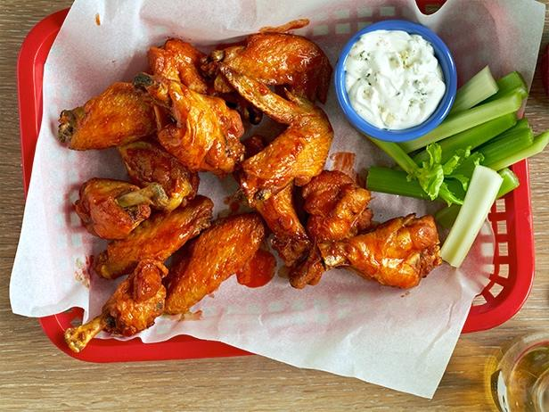

Hot wings

Recipe Description
A spicy and delectable dish meticulously develeloped by the world renown creater of "Pepper X", the hottest and most flavorful pepper currently in existence. In addition to using "Pepper X" , this recipe was curated under the supervision and collaboration of the worlds leading industry professionals such as Gordon Ramsey, Racheal Ray, Wolfgang Puck and many others, making this recipe the most succint, efficient, and flavor tuned wing recipe in the world. Make sure to have the water cooler full ando n stand-by, as this smokin hot appetizer will have you calling 911!
*WARNING*
The ingredients, as well as the finished product of this dish are EXTREMELY HOT! Be advised that went preparing this dish, to use extreme caution and proper hand and eye protection. The peppers used in this recipe are upwards of ONE MILLION SCOVILLE UNTIS and proper precautions must be in place to minimize health risk. Avoid touching your eyes, nose, and any other porus area on your face and skin to minimize possible reactions and side effects. It is HIGHLY ENCOURAGED to wash your hands with soap and hot water for a MINIMUM OF 20 SECONDS in between each step of this recipe to minimize the build up of Capsaicin and other harmful chemicals on your hands.
By acknowledging this, you waive all liability and ownership of any illness, side effect, or adverse medical conditions caused by the manufacturing and consumption of this product, from the creators and unto yourself. Smith, LLC is not liable for any damage, pain and suffereing, or increased toilet paper usage in results of the manufacturing or consuming of this product
CONSIDER YOURSELF WARNED!
Ingredients
For the wings
- 3-4 pounds chicken wings flats and drumettes separated
For the rub
- 1 tablespoon onion salt
- 1 teaspoon granulated chicken bouillon
- 1 teaspoon Old Bay seasoning
- 1 tablespoon ground coriander
- 1 tablespoon ground dried Carolina Reaper peppers
- 1 tablespoon ground dried "Pepper X" peppers
- 1 tablespoon ground dried Scorpion peppers
- 1 tablespoon ground cardamon
- 1 teaspoon ground bay leaf
- 1 teaspoon ground dried jalapeno
- 1 package Ranch dressing mix
- 2 teaspoons freshly ground black pepper
- 2 teaspoons kosher salt
Steps
For the rub
- combine the above mentioned rub ingredients into a large mixing bowl or one gallon zip-lock bag
- Whisk, shake, or stir untill the rub is throughly blended and homogenous
- set rub aside
For the wings
Note: For this method we are going to use an air fryer. Any brand or size will do
- Preheat air fryer to 375 degrees Farenheight
- Using our already seperated wings, place them on a plate or wire rack and dry them throurougly with a paper towel. this will help our rub bind better the the skin of the chicken and allow for maximum coverage. Make sure to set aside this plate/rack once done as it will now be contaminated
- with the wings dried, toss them thouroughly with the rub we prepared from above. Make sure to get an evenly distributed coat along all sides of the wings for maximum
- with the air fryer pre heated and our wings coated, distribute them evenly in the airfryer to allow for optimal circulation and set the timer for 10 minutes
- After 10 minutes, carefully flip the wings and cook them for another 8 minutes
- once complete, confirm that the internal temp of the wings reached 165 degrees farenheight and place them on a wire raack to rest for 5 minutes
- After 5 minutes, put the wings in a bowl and toss them in your favorite sauce, we reccomend the "Pepper X" collaboration between the creator and the Hot Ones youtube series
- Enjoy!